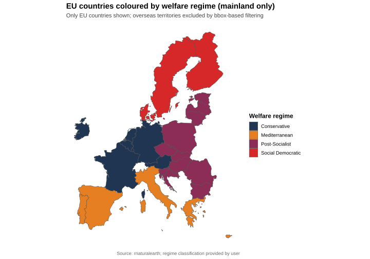

Come appare la polarizzazione politica di genere nella Gen Z europea
Una versione pubblica della mia tesi magistrale sulla nuova frattura culturale tra giovani donne e giovani uomini nei 27 paesi UE.
Ogni grafico qui sotto è una versione interattiva di una figura della tesi: passa il mouse per leggere valori esatti e intervalli di confidenza al 95%, clicca una voce della legenda per nascondere una serie oppure usa la barra del grafico per zoomare e scaricare un PNG.
Dove si collocano i giovani europei tra sinistra e destra
L'asse politico classico. Per ogni generazione, la posizione media del partito scelto dagli intervistati (donne vs uomini) sulla scala sinistra-destra CHES, dove valori più alti indicano una collocazione più a destra. È la dimensione più citata quando si parla di giovani uomini che diventano conservatori.
Ideologia sinistra-destra per generazione e genere
Cosa significaPer Silent Generation e Baby Boomers le due linee di genere sono quasi sovrapposte. Da Gen X, e ancora di più dai Millennials, iniziano a separarsi; con la Gen Z il divario si allarga nettamente: le giovani donne si spostano a sinistra mentre i giovani uomini restano sensibilmente più a destra.
Come leggerloPosizione media CHES sinistra-destra, donne (rosso) vs uomini (blu), per generazione, con bande di IC al 95%. UE27 aggregata, n = 36.082. Y più alto = destra, y più basso = sinistra.
Il divario di genere sinistra-destra, generazione per generazione
Cosa significaLa barra della Gen Z è circa 1,8 volte quella dei Millennials. Un divario sinistra-destra è sempre esistito, ma con la coorte più giovane diventa chiaramente più ampio invece di stabilizzarsi.
Come leggerloAltezza della barra = divario assoluto |donne − uomini| nella posizione media sinistra-destra, per generazione. La linea tratteggiata è un adattamento esponenziale ancorato, solo come guida visiva.
Ideologia sinistra-destra per anno di nascita
Cosa significaLa stessa immagine a risoluzione più alta: le due linee si muovono insieme per gli intervistati nati prima della fine degli anni Ottanta, poi si separano dopo circa il 1990. È il punto che la tesi identifica come l'emergere di un divario di genere moderno , seguendo Inglehart & Norris (2000) e Giger (2009).
Come leggerloPosizione media sinistra-destra smussata per anno di nascita, donne vs uomini, con finestre mobili centrate di cinque anni e IC al 95%. Y più alto = destra.
Il divario di genere sinistra-destra per anno di nascita
Cosa significaDalle coorti degli anni Cinquanta alla fine degli anni Ottanta il divario resta sotto circa 0,3 punti, una fase che Giger chiama “gender dealignment”. Da circa il 1990 in poi la curva piega verso l'alto: è la firma del divario di genere moderno.
Come leggerloDivario assoluto |donne − uomini| nella posizione media sinistra-destra per anno di nascita, con trend smussato loess. Y più alto = divario più ampio.
La vera linea di frattura: valori postmaterialisti vs tradizionali
La tesi sostiene che la frattura di genere più netta nella Gen Z non sia sull'asse sinistra-destra, ma sull'asse culturale che va dai valori postmaterialisti (ambiente, diritti delle minoranze, libertà civili) ai valori tradizionali (ordine, autorità, moralità tradizionale). Qui valori più alti indicano posizioni più tradizionali, valori più bassi più postmaterialiste.
Valori postmaterialisti-tradizionali per generazione e genere
Cosa significaDue traiettorie che si muovono in direzioni opposte. Le donne diventano progressivamente più postmaterialiste passando dalle generazioni più anziane a quelle più giovani: le donne Gen Z sono più progressiste delle donne Millennial, che a loro volta sono più progressiste delle donne Gen X. Gli uomini non seguono lo stesso percorso: gli uomini Gen Z invertono la tendenza maschile precedente e tornano verso il polo tradizionale. È il “flip” che, nella tesi, produce una frattura culturale più che un semplice spostamento generazionale.
Come leggerloPosizione media CHES GAL-TAN, donne (rosso) vs uomini (blu), per generazione, con bande di IC al 95%. Y più alto = più tradizionale; y più basso = più postmaterialista.
Il divario di genere sui valori culturali, generazione per generazione
Cosa significaQui la frattura è più ampia. La barra della Gen Z è circa 2,1 volte quella dei Millennials, circa tre volte il divario della Gen X e più di cinque volte quello dei Baby Boomers. Tra le tre dimensioni esaminate nella tesi, l'asse culturale è quello in cui la crescita generazionale del divario di genere è più evidente.
Come leggerloAltezza della barra = divario assoluto |donne − uomini| nelle medie GAL-TAN, per generazione.
Valori culturali per anno di nascita
Cosa significaPer le coorti nate fino alla fine degli anni Ottanta le due linee sostanzialmente si sovrappongono. Dal 1990 in poi la linea femminile piega verso il basso (più postmaterialista) mentre quella maschile piega verso l'alto (più tradizionale): le due traiettorie divergono come forbici che si aprono.
Come leggerloMedie GAL-TAN smussate per anno di nascita, donne vs uomini, con finestre mobili centrate di cinque anni e IC al 95%. Y più alto = più tradizionale.
Il divario di genere sui valori culturali per anno di nascita
Cosa significaLa curva smussata resta vicina allo zero per gran parte del Novecento e decolla solo per le coorti nate negli anni Novanta e Duemila. Lettura della tesi: se vuoi vedere dove si sta formando una nuova frattura culturale, guarda prima qui.
Come leggerloDivario assoluto |donne − uomini| nelle medie GAL-TAN per anno di nascita, con trend smussato loess. Y più alto = divario sui valori culturali più ampio.
Diritti delle donne: un rovesciamento generazionale
L'item CHES sui diritti delle donne misura quanto un partito sostiene l'espansione dei diritti delle donne. Valori più bassi indicano maggiore sostegno, valori più alti minore sostegno.
Sostegno ai diritti delle donne per generazione e genere
Cosa significaNelle generazioni più anziane le linee maschile e femminile si muovono quasi in parallelo. Con la Gen Z l'equilibrio si rompe: i giovani uomini calano nel sostegno ai diritti delle donne mentre le giovani donne si muovono nella direzione opposta.
Come leggerloPosizione media del partito sull'item CHES sui diritti delle donne, donne vs uomini, per generazione, con bande di IC al 95%. Y più basso = più sostegno ai diritti delle donne; y più alto = meno sostegno.
Il divario di genere sui diritti delle donne, generazione per generazione
Cosa significaIl divario tra giovani donne e giovani uomini sui diritti delle donne è circa 2,5 volte più grande nella Gen Z che tra i Millennials. Insieme al pannello sui valori culturali, è questo che rende la frattura Gen Z qualitativamente diversa, non solo “più della stessa cosa”.
Come leggerloAltezza della barra = divario assoluto |donne − uomini| nelle medie sui diritti delle donne, per generazione.
Sostegno ai diritti delle donne per anno di nascita
Cosa significaLe curve smussate sono notevolmente piatte fino a circa l'anno di nascita 1990. Poi la linea maschile inizia a salire (meno sostegno) mentre quella femminile scende (più sostegno). La rottura è visibile a occhio nudo.
Come leggerloMedie sui diritti delle donne smussate per anno di nascita, donne vs uomini, con finestre mobili centrate di cinque anni e IC al 95%. Y più basso = più sostegno ai diritti delle donne.
Il divario di genere sui diritti delle donne per anno di nascita
Cosa significaSinistra-destra, valori culturali e diritti delle donne raccontano la stessa storia: un divario basso e stabile per le coorti nate prima del 1990, poi un'apertura rapida. È la convergenza delle evidenze tra dimensioni che porta la tesi a trattarla come una frattura reale, non come un artefatto statistico.
Come leggerloDivario assoluto |donne − uomini| nelle medie sui diritti delle donne per anno di nascita, con trend smussato loess. Y più alto = divario più ampio.
Chi finisce agli estremi politici
Le medie possono nascondere la polarizzazione: una generazione può avere una media centrista ma essere internamente divisa tra due poli. Qui gli intervistati sono riclassificati come fortemente progressisti (CHES ≤ 2,5) oppure fortemente tradizionali (CHES ≥ 7,5) sull'asse postmaterialista-tradizionale. Prima osserviamo quante persone si collocano ai due poli in ogni generazione, poi separiamo il quadro per genere e infine seguiamo come cambia l'equilibrio nelle transizioni generazionali.
Quanti giovani europei si collocano davvero ai poli
Cosa significaLa quota di intervistati il cui partito preferito si colloca in uno dei due estremi culturali cresce quasi linearmente con ogni nuova generazione: da circa il 31% nella Silent Generation a circa il 50% nella Gen Z. Metà della Gen Z sceglie partiti che gli esperti codificano come fortemente progressisti o fortemente tradizionali: il centro non è più il luogo in cui si colloca la maggior parte dei giovani europei.
Come leggerloUn punto per generazione. Il valore y è la quota combinata di intervistati il cui partito collegato ottiene ≤ 2,5 (fortemente progressista) oppure ≥ 7,5 (fortemente tradizionale) sulla scala CHES postmaterialista-tradizionale. UE27 aggregata, n ≈ 36.300. Qui i generi sono aggregati.
Fortemente progressisti vs fortemente tradizionali, per genere
Cosa significaSeparare gli stessi dati per genere mostra dove si rompe la simmetria. Fino ai Millennials, donne e uomini si muovono insieme su entrambi i poli. Nella Gen Z le linee si incrociano: la quota di donne nel polo fortemente progressista sale a circa il 25% mentre la quota tradizionale resta piatta; gli uomini fanno l'opposto, con la quota progressista ferma al 22% e quella tradizionale che sale al 28%. È questa asimmetria che il resto della sezione analizza.
Come leggerloQuattro linee per generazione. Viola chiaro = fortemente progressisti (CHES ≤ 2,5), viola scuro = fortemente tradizionali (CHES ≥ 7,5). Linea continua = donne, tratteggiata = uomini. Ogni valore y è la quota nella cella generazione × genere. UE27 aggregata.
How the balance of extremes moves across generations
Cosa significaOgni punto è una transizione generazionale: quanto una nuova generazione sposta l'equilibrio tra estremi progressisti e tradizionali, in punti percentuali. Donne (rosso) e uomini (blu) si sono mossi in generale nella stessa direzione fino alla Gen X, diventando entrambi molto più progressisti nel passaggio Gen X → Millennials. Nel passaggio Millennials → Gen Z le due linee divergono nettamente: le donne restano in territorio progressista, gli uomini tornano verso il polo tradizionale. I segmenti verticali verdi mostrano l'ampiezza del divario a ogni transizione.
Come leggerloOgni punto = variazione dell'equilibrio progressisti−tradizionali (% fortemente progressisti − % fortemente tradizionali) lungo una transizione generazionale, in punti percentuali. Rosso = spostamento femminile, blu = spostamento maschile, segmento verde = |spostamento femminile − spostamento maschile|. UE27 aggregata.
Indice Gender Divergence in Change (GDC)
Cosa significaL'indice GDC condensa il grafico precedente in un solo numero per transizione: la distanza assoluta tra gli spostamenti generazionali femminili e maschili. La barra Millennials → Gen Z spicca: 9,2 punti percentuali, contro 0,6 nella transizione immediatamente precedente Gen X → Millennials. È un ordine di grandezza superiore a qualunque altro passaggio generazionale misurato qui.
Come leggerloOgni barra = indice GDC per una transizione generazionale, dove GDC = |variazione femminile − variazione maschile| in punti percentuali. Una barra più alta indica un movimento generazionale più divergente tra donne e uomini. UE27 aggregata.
Four Europes, four gender gaps
Il divario non è ugualmente ampio ovunque. Quattro famiglie di regime di welfare - Social Democratic, Conservative, Mediterranean e Post-Socialist - raccontano quattro storie diverse su dove si collocano davvero giovani donne e giovani uomini. Scegli un regime per vedere la sua traiettoria generazionale, poi confronta i regimi nei grafici sotto.
I regimi di welfare come contesti analitici

Cosa significaL'Europa non è un caso unico. Ognuna delle quattro famiglie di regime ha un proprio mix di norme di genere, strutture del mercato del lavoro, politiche familiari e sistemi di partito; è quindi plausibile che una frattura di genere nella Gen Z emerga in modo diverso in ciascuna. È proprio quello che mostrano i grafici sotto: stessa generazione, quattro storie di genere diverse.
Come leggerloStati membri UE27 colorati per famiglia di regime di welfare: Social Democratic (Nordici), Conservative (Europa occidentale continentale), Mediterranean (Europa meridionale), Post-Socialist (Europa centrale e orientale). Il raggruppamento segue la tipologia standard di welfare state usata nella ricerca comparata e non implica che i paesi dentro un gruppo siano identici.
Valori culturali per generazione e genere — Conservative
Cosa significaLoading…
Come leggerloPosizione media GAL-TAN per ogni generazione nel regime selezionato, donne (rosso) vs uomini (blu), con bande di IC al 95%. Y più alto = più tradizionale; y più basso = più postmaterialista. Clicca uno dei pulsanti di regime sopra per cambiare grafico. Fonti: EES 2024, ESS 2023-2024, CHES 2024.
Medie Gen Z per regime di welfare
Cosa significaLoading…
Come leggerloBarre raggruppate: ogni regime ha una barra rossa (media donne Gen Z) e una blu scuro (media uomini Gen Z) sulla scala GAL-TAN. Passa sulla barra per leggere il valore esatto. Barra più alta = gruppo mediamente più tradizionale.
Divario di genere Gen Z assoluto per regime
Cosa significaLoading…
Come leggerloAltezza della barra = |media donne − media uomini| nella Gen Z di quel regime. Barra più alta = frattura di genere più ampia oggi, indipendentemente da come il regime ci sia arrivato.
Indice Gender Divergence in Change (GDC) per regime
Cosa significaLoading…
Come leggerloAltezza della barra = indice GDC per la transizione Millennials → Gen Z in quel regime, in punti percentuali. Il GDC sposta l'attenzione dalle differenze di livello al movimento: quanto diversamente cambiano donne e uomini nell'equilibrio tra estremi progressisti e tradizionali. Barra più alta = traiettoria femminile e maschile più divergente.
Cosa spiega la frattura
Una volta mappato il divario, la tesi chiede chi dentro la Gen Z lo produce. Una regressione standardizzata isola come cinque fattori individuali - difficoltà economica, istruzione, luogo di residenza, origine dei genitori e frequenza religiosa - rimodellano il divario di genere sull'asse culturale. Il modello è GAL-TAN ~ donna + predittori(z) + donna × predittori(z): ogni interazione indica quanto una deviazione standard in più di un predittore sposta le donne rispetto agli uomini.
Divario di genere Gen Z — effetti di interazione standardizzati
Coefficienti da y = CHES ~ donna + predittori(z) + donna × predittori(z).
| Predittore | Coeff. | IC 2,5% | IC 97,5% | Errore std. | p-value |
|---|---|---|---|---|---|
| Donna (divario baseline) | −0.5277 | −0.7107 | −0.3447 | 0.0933 | <0.001 |
| Difficoltà economica (z) | −0.2232 | −0.4101 | −0.0364 | 0.0953 | 0.019 |
| Istruzione (z) | −0.1054 | −0.2944 | 0.0836 | 0.0964 | 0.274 |
| Luogo di residenza (z) | −0.0725 | −0.2551 | 0.1101 | 0.0931 | 0.436 |
| Frequenza religiosa (z) | +0.2419 | 0.0560 | 0.4278 | 0.0948 | 0.011 |
| Origine dei genitori (z) | +0.2642 | 0.0805 | 0.4479 | 0.0937 | 0.005 |
Le righe evidenziate sono statisticamente significative (p < 0,05).
Cosa significa La prima riga imposta il quadro: tenendo costante tutto il resto, le giovani donne Gen Z si collocano 0,53 punti GAL-TAN più verso il lato postmaterialista rispetto ai giovani uomini (p < 0,001). Le altre righe mostrano come quel divario di base si muove when one specific predictor goes up by one standard deviation. Three factors move it in a statistically significant way. La difficoltà economica allarga il divario (−0,22, p = 0,019): quando la difficoltà materiale è più alta, le donne si allontanano di più dagli uomini. La frequenza religiosa lo restringe (+0,24, p = 0,011) e l'origine dei genitori lo restringe di più (+0,26, p = 0,005): più religiosità o un genitore nato all'estero riportano le giovani donne più vicine ai giovani uomini sull'asse culturale. Istruzione e luogo di residenza non sono significativi (p = 0,274 e p = 0,436). La lettura coincide con la tesi: la frattura moderna dipende meno da dove le persone vivono o da quanto hanno studiato, e più dai mondi culturali ed economici in cui donne e uomini Gen Z vivono concretamente.
Come leggerlo Ogni riga è un termine della regressione. Coeff. è la stima standardizzata (in unità GAL-TAN per una deviazione standard del predittore). IC 2,5% e IC 97,5% sono il limite inferiore e superiore dell'intervallo di confidenza al 95%. Errore std. è l'errore standard del coefficiente. p-value riporta la probabilità di osservare un coefficiente così grande sotto l'ipotesi nulla. Un intervallo di confidenza che non attraversa lo zero è statisticamente significativo. Coefficienti negativi allargano il divario donne-uomini; coefficienti positivi restringono il divario. Fonti: EES 2024 + ESS 2023-2024 + CHES 2024, regressione standardizzata sugli intervistati Gen Z.
Metodo in breve
La tesi armonizza gli intervistati della European Social Survey (ESS, fieldwork 2023-2024) e della European Election Study (EES, fieldwork 2024) e collega ogni intervistato alla posizione del partito sostenuto nella Chapel Hill Expert Survey (CHES, 2024). Questo produce punteggi coerenti su tre dimensioni: sinistra-destra, postmaterialista-tradizionale e sostegno ai diritti delle donne.
I trend per anno di nascita sono smussati con finestre mobili centrate di cinque anni per stabilizzare le stime. Le categorie generazionali vanno dalla Silent Generation alla Gen Z. Le posizioni di partito estreme sono tagliate per ridurre l'influenza degli outlier e i controlli di sensibilità confermano che le conclusioni sostanziali restano robuste. Campione UE27 aggregato, n ≈ 36.000 a seconda della dimensione.
Riferimenti APA
I grafici e i commenti di questa pagina si basano sulla tesi, sugli output finali dell'analisi e sulle fonti dati citate nella dissertation.
- European Social Survey European Research Infrastructure (ESS ERIC). (2025). ESS round 11 - 2023. Social inequalities in health, Gender in contemporary Europe. Sikt - Norwegian Agency for Shared Services in Education and Research. https://doi.org/10.21338/ess11-2023
- Popa, S. A., Hobolt, S. B., Van der Brug, W., Katsanidou, A., Gattermann, K., Sorace, M., Toygur, I., & De Vreese, C. (2024). European Parliament Election Study 2024, voter study (ZA8868; Version 1.0.0) [Data set]. GESIS, Cologne. https://doi.org/10.4232/1.14409
- Rovny, J., Bakker, R., Hooghe, L., Jolly, S., Marks, G., Polk, J., Steenbergen, M., & Vachudova, M. (2025). 25 years of political party positions in Europe: The Chapel Hill Expert Survey, 1999-2024 [Working paper].
- Esping-Andersen, G. (1989). The three political economies of the welfare state. Canadian Review of Sociology/Revue canadienne de sociologie, 26(1), 10-36. https://doi.org/10.1111/j.1755-618X.1989.tb00411.x
- Ferrera, M. (1996). Il modello sud-europeo di welfare state. Italian Political Science Review/Rivista Italiana di Scienza Politica, 26(1), 67-101. https://doi.org/10.1017/S0048840200024047
- Inglehart, R., & Norris, P. (2000). The developmental theory of the gender gap: Women’s and men’s voting behavior in global perspective. International Political Science Review, 21(4), 441–463.
- Giger, N. (2009). Towards a modern gender gap in Europe? A comparative analysis of voting behavior in 12 countries. The Social Science Journal, 46(3), 474–492.
- Ghezzi Colombo, S. (2025). Masculinities, feminist mobilization and the new cultural divide: A quantitative analysis of gendered political attitudes among young Europeans [Master’s thesis, University of Milano-Bicocca].